Лимфоидные органы и ткани.
В постнатальном периоде лимфоциты, главным образом, генерируются в центральных лимфоидных органах: костном мозге и тимусе. Очевидно, что развитие их клонального разнообразия происходит, в основном, в этих органах, хотя экспансия клонов может иметь место и в периферической лимфоидной ткани.
Костный мозг служит и центральным, и в определенной степени периферическим лимфоидным органом. Предшественники В-клеток развиваются у птиц в фабрициевой сумке, а у млекопитающих и человека - в желточном мешке и печени плода в эмбриональном периоде и в костном мозге после рождения. Костный мозг в постнатальный период производит и Т- и В-клетки, по-видимому, из общей полустволовой лимфоидной клетки. Развитие В-клеток происходит здесь в течение всей постнатальной жизни. Оно не сводится к простой пролиферации. Дифференцировка клонов В-клеток предполагает активное соматическое мутирование и альтернативный сплайсинг генов, кодирующих варианты различных участков антител. Таким образом нарабатывается клональное разнообразие В-клеток. В-лимфоциты выходят из костного мозга достаточно дифференцированными. Предшественники Т-лимфоцитов, произведенные в костном мозге и диверсифицированные на множество клонов с различной структурой поверхностных антигенных рецепторов, еще недостаточно дифференцированы и для дальнейшей дифференцировки попадают в тимус, где параллельно созреванию идет положительная и отрицательная селекция их клонов. Костный мозг, как периферический лимфоидный орган, содержит наряду с гемопоэтическими предшественниками и зрелые Т- и В-лимфоциты, а также макрофаги и их предшественники. Гибель клеток-предшественников в костном мозге в результате облучения, воздействия химических мутагенов, вирусов, экспансии злокачественных атипических клеток, аутоиммунного цитолитического или антипролиферативного эффекта - приводит к лимфопениям и иммунодефицитным состояниям. В лимфоидных клетках-предшественниках, из-за постоянного перекомбинирования генов при развитии клонального разнообразия лимфоцитов, нередко происходят соматические мутации, приводящие к экспрессии протоонкогенов. Это может приводить к появлению атипических лимфоидных бластов и обусловливает довольно высокую частоту лимфоидных лейкозов и лимфом (по данным П.Чандрасомы и К.Тэйлора (1998) - шестое место по частоте среди всех неоплазий у населения Северной Америки). Апластические и неопластические процессы с участием лимфоидных клонов костного мозга часто комбинируются.
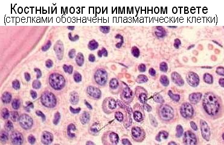
Вилочковая железа или тимус - сложноорганизованный орган, который древние индусы и Руфус Эфесский (100 г. до н.э.) неспроста считали вместилищем души. Тимус имеет две доли и множество долек, каждая из которых содержит корковое и мозговое вещество (см. М.Д.Кендалл, 1981). В коре тимуса преобладают плотно упакованные малые Т-лимфоциты. Здесь имеются также эпителиальные клетки-няньки. Мозговое вещество, кроме Т-лимфоцитов (более зрелых, чем кортикальные, расположенных гораздо менее плотно, чем в коре и имеющих маркер CD44), располагает закреплёнными на строме эпителиальными клетками, образующими сеть и скопления, с которыми лимфоциты тесно контактируют. Особые плотные образования из дегенерирующих в результате апоптозов эпителиальных клеток в мозговом веществе называются тельцами Гассаля. Строма и дендритные или D-клетки (они же - звездчатые клетки - аналоги АПК) происходят из третьего и четвертого глоточных карманов. Эти клетки необходимы для развития ограничения (рестрикции) по ГКГС-гликопротеидам, которые представляются ими местным лимфоидным элементам (тимоцитам - созревающим Т-лимфоцитам), пришедшим из желточного мешка, фетальной печени и костного мозга, и обосновавшимся в тимусе. Энергичные митозы лимфоцитов, а также гибель клеток в коре тимуса служат для окончательного определения полного набора зрелых Т-клеток, которые покидают тимус с целью колонизации периферических лимфоидных органов. Как уже говорилось выше, школу тимуса оканчивают далеко не все “принятые” в нее Т-лимфоциты. Пройдя курс обучения, уцелевшие выпускники, способные к взаимодействиям с аутологичными клетками иммунной системы, но аутотолерантные, покидают тимус по венулам. Роль тимуса в иммуногенезе осознали сравнительно недавно. Еще в 1963 г. такой авторитетный иммунолог, как П.Медавар, искренне заявлял: “ мы должны рассматривать присутствие лимфоцитов в вилочковой железе как эволюционный курьёз, не имеющий очень уж большого значения”. Однако, в 1961-1962 гг. австралийский иммунолог Дж.Ф.А.П.Миллер провёл решающие эксперименты, позволившие ему заключить, что “в эмбриогенезе тимус даёт начало иммунокомпетентным клеткам, многие из которых впоследствии, к моменту рождения мигрируют в иные места, а это означает, что лимфоциты, покидающие тимус, проходят специальный отбор”. Позже тому же Миллеру и Дж.Ф.Митчеллу (1967-1968) удалось обосновать идею, что лимфоциты приходят в тимус из костного мозга и проходят там обучение в форме позитивной и негативной селекции.
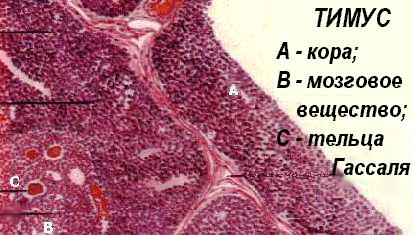
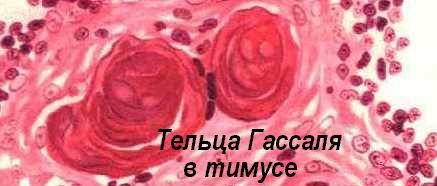
Дефекты в развитии и созревании тимуса чреваты нарушением созревания Т-клеток, приводящем к иммунодефицитам, как например при полной аплазии вилочковой железы -синдроме Ди Джорджа и её дисплазии - синдроме Незелоффа (см. раздел “Иммунодефициты”). Поражения тимуса нарушают негативную селекцию аутореактивных Т-клонов и способствуют аутоиммунной патологии. С возрастом тимус подвергается инволюции, что связывают с ослаблением иммунного надзора и аутотолерантности у пожилых (см. выше “Возрастные аспекты реактивности”). Стресс ускоряет апоптозы тимоцитов и инволюцию тимуса.


Тимус не только иммунный, но и важный эндокринный орган (З.Кемилева, 1984). Эпителиальные клетки тимуса выделяют в системный кровоток полипептидный гормон тимопоэтин (он же - тимозин), способствующий созреванию тимоцитов, а также цинк-содержащий пептид тимулин, необходимый для иммуногенеза (Ж-Ф.Бах, 1984). Множество других цитокинов тимуса выделяют эпителиальные клетки, тимоциты и пришлые макрофагальные и интердигитирующие клетки. Эти цитокины охарактеризованы выше. Системное действие тимозина и других тимусных пептидов ведет к активации продукции АКТГ и кортикостероидов.
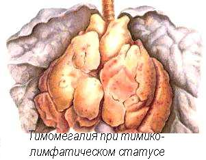
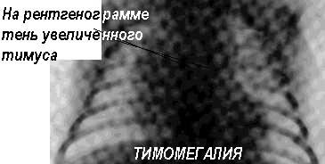
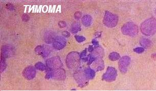
При аплазии тимуса имеется дефицит Т-клеточных цитокинов, в частности, ИЛ-2, что нарушает иммунные ответы, причём как гуморальные, так и клеточные. Гиперплазия тимуса связана со своеобразным изменением реактивности - status thymicolymphaticus (cм. выше, раздел “Диатезы”). С иммунологической точки зрения крайне важно, что при гиперплазии тимуса в нём появляются отсутствующие в норме В-лимфоцитарные фолликулы. У таких индивидов всегда имеются нарушения аутотолерантности. Примером служит тяжёлая миастения, с аутоиммунитетом к никотин-холинергическим рецепторам и гиперплазией тимуса или злокачественной опухолью из эпителия тимуса - тимомой. Другие аутоиммунные расстройства - апластическая анемия, в том числе - Блэкфана-Даймонда, системная красная волчанка, аутоиммунные эндокринопатии - тоже встречаются при тимомах часто. Тимус вовлекается в Т-клеточный лимфобластный лейкоз и Т-лимфомы, которые реже возникают на месте, а чаще бывают костномозговыми метастатическими. Периферические лимфоидные органы и скопления лимфоцитов содержат зрелые лимфоциты и вспомогательные клетки (AПК), эти элементы располагаются по всему организму, однако относительный процент Т- и В-клеток в них различен, в зависимости от локализации ( см. табл. 1).
Состав лимфоидных органов
в процентах от всего количества местных
лимфоидных клеток).
Орган иммунной системы |
Т-клетки
(%) |
В-клетки
(%) |
Тимус |
100 |
0 |
Кровь |
85 |
15 |
Лимфоузлы |
70 |
30 |
Селезёнка |
40 |
60 |
Костный мозг |
10 |
90 |
Селезенка - основная арена уничтожения опсонизированных клеток, как микробных, так и собственных, например клеток крови. Этот процесс идёт в красной пульпе. Нет студента, который бы не знал, что “селезёнка - кладбище эритроцитов”. Процесс аутофагоцитоза в селезёнке может резко усиливаться (гиперспленизм) при таких аутоиммунных синдромах как гемолитическая анемия и тромбоцитопения (см.выше “Фагоцитоз”). Гипоспленизм при удалении и амилоидозе этого органа, наоборот, сопровождается тромбоцитозом, постарением эритроцитов (старые красные кровяные элементы несут базофильные тельца Жолли-Хауэлла), а также повышением риска бактериемии и паразитемии.
Селезёнка - это почти четверть лимфоидной ткани организма и мощная армия макрофагов. Ряд цитокинов и лейкокининов, вырабатываемых клетками этого органа, действуют в ходе организации иммунного ответа локально. Но они поступают и в портальный кровоток, что позволяет образованным здесь интерлейкинам влиять прямо на печень и запускать там синтез белков острой фазы. Тафцин и спленопоэтин (см. выше “Воспаление”) выделяются селезёнкой в систему воротной вены и рассматриваются, как её гормоны, стимуляторы фагоцитоза.
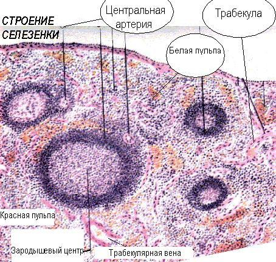
При венозном застое (портальная гипертензия), гемобластозах (хронические лимфолейкоз и миелолейкоз, гистиоцитоз Х), а также тезаурисмозах (болезни Гоше и Нимана-Пика), аутоиммунных заболеваниях (ревматоидный артрит, системная красная волчанка, болезнь Верльгофа), хронических инфекциях (лейшманиоз, бруцеллёз), внутрисосудистом гемолизе (эритропатии, гемоглобинопатии) типичным проявлением служит спленомегалия. Иммунные функции селезёнки при спленомегалии могут извращаться. Так, появляются аутоантитела к клеткам крови. Селезёнка может быть источником аутоантител, поражающих печень (синдром Банти - первичная спленомегалия, аутоантитела против гепатоцитов и вторичный спленомегалический цирроз).
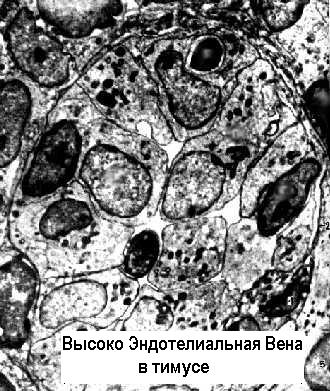
Лимфатические узлы работают как фильтры в системе лимфообращения. Регионарные лимфатические узлы отвечают на антигены, доставленные им по приносящим лимфатическим сосудам. Генерализованная реакция лимфатических узлов может произойти при гематогенном заносе антигена. В лимфатическом узле антиген оказывается, пройдя через афферентные лимфатические сосуды . Попадая в В-зону узла - кортикальный слой, антигены процессируются и представляются местными АПК - дендритными ретикулярными клетками В-лимфоцитам, которые пролиферируют и трансформируются вокруг АПК в виде реактивных зародышевых центров или фолликулов, очень похожих на соответствующие селезёночные. В паракортикальной Т-зависимой зоне антигены процессируют и презентуют ретикулярные интердигитирующие клетки, которые стимулируют этим Т-лимфоциты. Продукты клеточной кооперации, сенсибилизированные Т-лимфоциты и плазматические В-клетки, продуценты антител, накапливаются в мозговом веществе узла, откуда вместе с макрофагами рекрутируются обратно в циркуляцию через эфферентные лимфососуды и посткапиллярные высокоэндотелиальные венулы. Таким образом, лимфоузел-динамическая структура, а вторичные реактивные фолликулы появляются в лимфоузле, как результат идущего иммунного ответа. Увеличение лимфоузлов или лимфаденопатия, не обязательно, свидетельствует о лимфадените. Эти понятия необходимо различать.
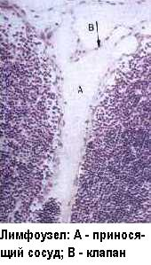
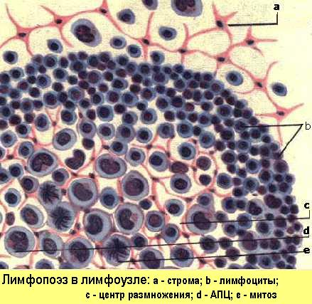
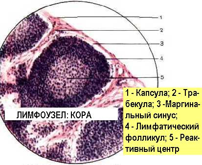
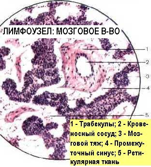
Лимфаденопатия может быть следствием реактивной гиперплазии лимфоидных элементов узла, при иммунном ответе (местно или регионально - при воспалении, системно - при виремии или антигенемии). В этом случае в лимфоузле из всего спектра медиаторов воспаления обнаруживаются только цитокины, а его клеточный состав соответствует описанному выше, отличаясь большим количеством и размерами зародышевых фолликулов.
Лимфаденопатия может сопровождаться воспалительным процессом в самом узле - при гнойном лимфадените (стафилококковая инфекция), гранулёматозном лимфадените (туберкулёз), гранулёматозно-гнойном смешанном процессе (lymphogranloma venereum, болезнь кошачьих царапин). Во всех подобных случаях в лимфоузле наличествуют необычные клеточные элементы воспалительного инфильтрата, а часто - персистирующие возбудители. Это-то и дает основания говорить о лимфадените.
Лимфаденопатии возникают при асептических иммунопатологических процессах (сывороточная болезнь), а также местных либо метастатических неоплазиях. Это, прежде всего, лимфогранулёматоз и неходжкинские лимфомы, реже гистиоцитарные опухоли и колонизация лимфолейкозными бластами. Интересно, что именно АПК - интердигитирующие паракортикальные ретикулярные клетки, по мнению многих патологов, дают злокачественный клон клеток Березовского-Штернберга-Рида при лимфогранулёматозе. В результате опухолевой эмболии (см. “Эмболия” ) региональные и отдалённые лимфоузлы могут становиться прибежищем метастазов нелимфоидных злокачественных опухолей (классический пример - вирховский метастаз рака лёгкого в надключичные лимфоузлы).
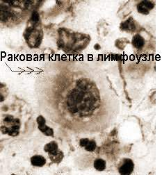
Грудной лимфатический проток - богатый источник зрелых Т-клеток (и небольшого количества В-клеток). Хронический дренаж лимфатического протока может вызвать истощение популяции Т-клеток и используется как метод иммуносупрессии.
Региональная лимфатическая система представлена рассеянными неинкапсулированными лимфоидными элементами, связанными со слизистыми оболочками. Эти лимфоциты расположены в собственной пластинке слизистой и в подслизистом слое, а сверху прикрыты базальной мембраной и соответствующими эпителиями, снабжёнными слизистыми и иными железами и бокаловидными секреторными клетками. На пересечении дыхательных путей и пищеварительного тракта, где антигенная стимуляция очень выражена и разнообразна, имеется кольцо Вальдейера-Пирогова, состоящее из таких скоплений - нёбных, носоглоточной, гортанной и язычной миндалин. В трахее и бронхах также имеются диффузные лимфоидные скопления. Ассоциированная с бронхами лимфоидная ткань включает также лимфатические элементы нижних дыхательных путей и хилюсные лимфатические узлы. Здесь происходит продукция и секреция IgA в ответ на вдыхаемые антигены. Свои лимфоидные элементы присутствуют и в lamina propria, и в подслизистом слое урогенитального тракта.
Ассоциированная с кишечником лимфоидная ткань весьма обильна и включает лимфоидные компоненты кишечника -пейеровы бляшки, лимфоидные скопления аппендикса и лимфоциты печени.
В лимфоидной ткани слизистых преобладают Т-лимфоциты, но имеется и достаточно много (до 30%) В-клеток, формирующих зародышевые фолликулы. Как правило, в собственной пластинке слизистой преобладают активированные Т-лимфоциты, по преимуществу, хелперы. Здесь же обнаруживаются плазматические клетки, особенностью которых считается специализация на синтез IgA.
Данные иммуноглобулины подвергаются эндоцитозу в клетки эпителия слизистой через специальный полиглобулиновый рецептор, затем соединяются с секреторным компонентом эпителиального происхождения, защищающим их от протеолиза при трансцитозе, и, наконец, экзоцитируются в составе слизи, желчи и т.д. на поверхность mucosa или в просвет органов (К.Мостов, Р.Блёбель 1982).
Подслизистый слой, в частности, в пейеровых бляшках, представляет, в основном Т-зону. Интраэпителиальные лимфоциты - это и цитотоксические Т-клетки (70%) и плазматические В (20%). Особеностью интраэпителиальных Т-лимфоцитов ассоциированной со слизистыми лимфоидной ткани является их принадлежность, по преимуществу, к редкой разновидности - с gd-типом Т-клеточного рецептора (см.ниже). Считается, что они занимаются иммунным надзором за мутантными и зараженными внутриклеточными патогенами клетками.
Ассоциированная со слизистыми лимфоидная ткань обособлена от остальных периферических лимфоидных органов и способна при иммунных ответах реагировать как целое, то есть местная сенсибилизация лимфоцитов в одном её участке через некоторое время приводит к иммунному ответу по всей её площади. Более того, возможны перекрёстные ответы с энтеральной сенсибилизацией и иммунным ответом на слизистой дыхательных путей, как это наблюдается иногда при пищевой аллергии, ассоциированной с бронхиальной астмой. Это происходит потому, что лимфоидная ткань слизистых представляет собой уникальную модель рециркуляции лимфоцитов. Слизистая кишечника располагает специальными антиген-транспортирующими М-клетками, которые доставляют абсорбированные интестинальные антигены лимфоцитам и, возможно, процессируют их. Многие из лимфоидных клеток в пейеровых бляшках после встречи с антигеном из кишечника поступают в основное циркуляторное русло, а затем возвращаются назад, "домой" в слизистые, через кишечные посткапиллярные высокоэндотелиальные венулы. Это происходит, благодаря распознаванию лимфоцитами слизистых уникальных адресных молекул клеточной адгезии, которые имеются только по месту их “прописки”. Ассоциированная с кишечником лимфоидная ткань очень важна для развития толерантности к кишечным антигенам.
Литические возможности системы пищеварения защищают кишечные лимфоциты от избыточной антигенной стимуляции. Своеобразное равновесие, складывающееся на слизистой кишечника между его нормальной микрофлорой и лимфоцитами, не предусматривает избыточно сильных иммунных ответов против эубактериальной флоры. Правильному формированию этого иммуномикробного симбиоза способствует естественное вскармливание. При патологии, из-за недостаточного расщепления тех или иных антигенов и поликлональных лимфоидных стимуляторов, кишечные лимфоидные элементы могут реагировать гиперергическими и даже аутоаллергическими ответами. Так, интестинальная иммунизация пептидами бычьего сывороточного альбумина у недоношенных и новорожденных носителей антигенов ГКГС D3 и D4, находящихся на искусственном вскармливании, может впоследствии привести к развитию аутоаллергии против собственного инсулина и даже к ювенильному сахарному диабету (А.Карьялайнен и соавт.,1992). Недопереваренные злаковые белки глиадин и авенин, задерживаясь в стенке кишечника, выполняют роль поликлональных лектиноподобных иммуностимуляторов и способствуют целиакии. Перекрёстный имунный ответ между антигенами непатогенной Е.Coli и слизистой толстого кишечника благоприятствует развитию неспецифического язвенного колита и т.д.
Наряду с лимфоидной тканью слизистых, можно выделить и ассоциированную с кожей лимфоидную ткань. Антигены, попадающие через кожу, презентируются эпидермальными клетками Лангерганса, представляющими собой АПК. Они взаимодействуют с лимфоцитами прямо в коже и/или в дренирующих кожу лимфатических узлах, куда могут мигрировать. Эта часть иммунной системы играет исключительную роль при контактном дерматите, туберкулиноподобных реакциях, многих гранулёматозных поражениях, экземе и атопическом дерматите, буллёзной пузырчатке, псориазе и других иммунопатологических кожных болезнях. В-лимфоциты кожи также способны вырабатывать IgA, который здесь поступает в секрет потовых и сальных желёз.
Кровь - важный компонент иммунной системы. В кровотоке циркулируют представители всех лимфоидных и нелимфоидных клеточных линий. Кровь чаще всего берут для анализа состояния лимфоидной системы (например подсчете клеток крови), и можно считать, что картина, обнаруженная в мазках крови, нередко соответствует тому, что имеется в других лимфоидных тканях. Так, при синдроме приобретённого иммунодефицита одинаковые изменения соотношения CD4 и CD8 -лимфоцитов наблюдаются в крови и иных органах иммунной системы. Однако есть и исключения. Например, при саркоидозе субпопуляции Т-клеток в крови не совпадают с субпопуляциями Т-клеток, обнаруживаемыми в пораженной ткани легкого. Интратекальные лимфоциты ликвора при демиелинизирующих заболеваниях ЦНС отличаются по активности и маркерам от периферических.
 .....
.....
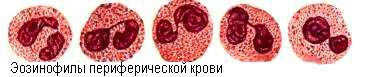
Кровь является ареной развертывания реакций типа "трансплантат против хозяина", а при переливании несовместимой крови развивается цитотоксическая реакция, иллюстрирующая ситуацию “хозяин против трансплантата”.
|
|
|
|
|
|